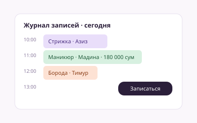
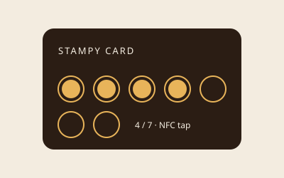
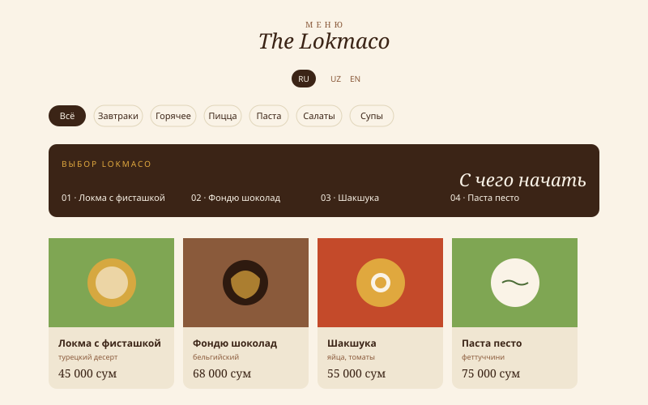
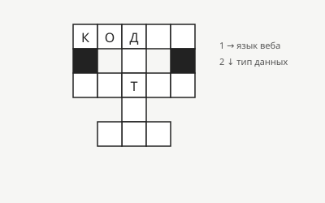
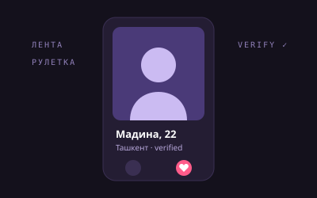
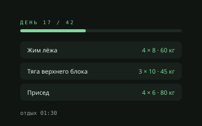

The Lokmaco. Приход, инвентаризация, зарплаты, сверка кассы, 9 ролей.

Бьюти-сфера. Журнал записей, клиенты, мастера, касса и виджет записи для клиентов.

SaaS. Касание NFC-метки на кассе начисляет штамп, после N штампов выдаётся напиток.

The Lokmaco. Меню на трёх языках, админка без пересборки, бонусная карта.

Личный. Платформа кроссвордов: редактор, темы, история игр, админка.

Склад. Приёмка, отгрузки, списания и выгрузка в Excel.

Дейтинг. Для Узбекистана: лента, где неактивные анкеты тонут, селфи-верификация с жестом против катфиша, рулетка анонимных чатов, отзывы только после мэтча.

Фитнес. 42-дневная программа: дневник подходов с черновиком, таймер отдыха, техника, прогрессия, история и CSV. Подпись initData проверяется на сервере, таблицы закрыты RLS.